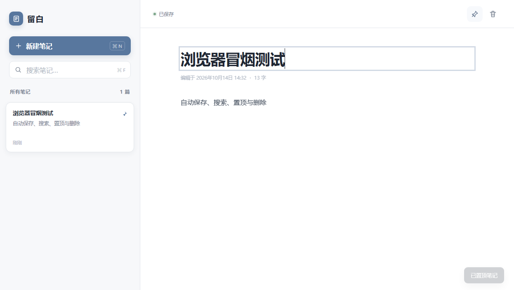

Microsoft Edge 扩展 · v1.0.0
把想法留下，
把干扰留白。
一款无需登录、没有云端账户的个人笔记工具。打开即写，自动保存，所有内容只留在你的浏览器里。
面向 Microsoft Edge · 商店审核完成前可使用开发人员模式手动安装
Microsoft Edge 中的产品界面示意
0账号与注册
0扩展权限
本地数据保存位置
260ms输入后自动保存
Edge 实际界面
打开即写，没有多余步骤
以下截图由 Microsoft Edge 本地验收流程生成，展示置顶状态、自动保存和双栏编辑界面。

核心功能
只保留记录真正需要的部分
没有复杂的组织体系，也没有强迫你改变习惯的流程。写下、找到、继续编辑。
01
输入即保存
标题和正文都会自动保存。连续快速输入不会因为手动保存被打断。
已保存
02
即时搜索
同时检索标题与正文，结果随输入立即更新。
03
重点置顶
重要内容始终在前，其余按最近修改时间排列。
04
只在你的浏览器里
不需要网络，不读取网页，也不向服务器上传笔记。扩展权限保持为零。
安装
三步开始记录
- 1
下载并解压
下载 ZIP 文件，将它解压到一个固定目录。
- 2
打开扩展管理
在 Microsoft Edge 访问
edge://extensions/，开启“开发人员模式”。 - 3
加载并固定
选择“加载已解压的扩展程序”，选中刚才的目录，然后固定到工具栏。
当前版本
v1.0.0
首个可分发版本，包含新建、编辑、自动保存、搜索、置顶、删除确认和移动端适配。
- 目标浏览器
- Microsoft Edge
- 声明权限
- 无
- 数据位置
- 浏览器本地
- 更新时间
- 2026-10-14
开放与反馈
简单，透明，也方便继续改进。
源码与问题反馈公开托管在 GitHub；Microsoft Edge Add-ons 商店链接会在审核通过后启用。